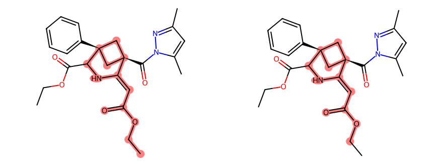

左：精确支链；右：连接端环境

实际触发与执行范围
{
"exact": {
"id": "7a5f0e7049d2de711eb6d79e",
"parent_id": "e30c64e8c8c80fcb12da1662",
"layer": "core",
"core_smarts": "[#6&A&+0:7]1-[#7&A&+0:8]-[#6&A&+0:9]-[#6&A&+0:15]2-[#6&A&+0:16]-[#6&A&+0:17]-1-[#6&A&+0:18]-2",
"target_atoms": [
6,
7,
8,
14,
15,
16,
17
],
"rule_id": "complete_ring_system",
"rule_version": "organic-reference-1.6",
"r_constraints": [
{
"position": 0,
"requirement": "required",
"category": "any",
"exact_fragment": "CCOC(=O)C=[*:1]",
"max_carbons": null
}
],
"equal_r_positions": [],
"core_topology_policy": "forbid_extra_internal_edges",
"allow_extra_substitution": true,
"use_generic_matchers": true,
"relation": "structural_family",
"description": "根据已核验命中补查核心位点 [0]；保留其他位点变化空间",
"trigger": "missing_attachment_block"
},
"relaxed": {
"id": "b8b55ee22d7cede503c2b49b",
"parent_id": "7a5f0e7049d2de711eb6d79e",
"layer": "core",
"core_smarts": "[#6&A&+0:2]-[#8&A&+0&H0&X2:3]-[#6&A&+0&H0&X3:4](=[#8&A&+0&H0&X1:5])-[#6&A&+0&H1&X3:6]=[#6&A&+0:7]1-[#7&A&+0:8]-[#6&A&+0:9]-[#6&A&+0:15]2-[#6&A&+0:16]-[#6&A&+0:17]-1-[#6&A&+0:18]-2",
"target_atoms": [
1,
2,
3,
4,
5,
6,
7,
8,
14,
15,
16,
17
],
"rule_id": "relaxed_attachment_environment",
"rule_version": "organic-reference-1.6",
"r_constraints": [],
"equal_r_positions": [],
"core_topology_policy": "forbid_extra_internal_edges",
"allow_extra_substitution": true,
"use_generic_matchers": true,
"relation": "structural_family",
"description": "精确支链查询范围完成且无匹配后，保留连接端环境、放宽远端；不是精确支链命中",
"trigger": "completed_exact_attachment_scope_without_match"
},
"states": [
{
"family_id": "7a5f0e7049d2de711eb6d79e",
"role": "product",
"stage": 0,
"selection_scope_id": "fadd2f8d437507bd698e15a2",
"complete": true,
"stream_exhausted": true,
"enumeration_kind": "core_filtered_knn512_with_bounded_input_core_absence_seeds_individual_verification_required_required_single_port_r_prefilter",
"matching_enumeration_complete": true
},
{
"family_id": "7a5f0e7049d2de711eb6d79e",
"role": "product",
"stage": 1,
"selection_scope_id": "f5f080fd647f3e01632c26c9",
"complete": true,
"stream_exhausted": true,
"enumeration_kind": "indexed_side_substructure_session_cursor_without_global_sort_or_size_window_required_single_port_r_prefilter",
"matching_enumeration_complete": true,
"relaxation_family_id": "b8b55ee22d7cede503c2b49b"
},
{
"family_id": "b8b55ee22d7cede503c2b49b",
"role": "product",
"stage": 0,
"selection_scope_id": "e6d1d86785050a585cfed4dc",
"complete": true,
"stream_exhausted": true,
"enumeration_kind": "core_filtered_knn512_with_bounded_input_core_absence_seeds_individual_verification_required",
"matching_enumeration_complete": true
},
{
"family_id": "b8b55ee22d7cede503c2b49b",
"role": "product",
"stage": 1,
"selection_scope_id": "adeaf8b32c6a33f3aa3f0772",
"complete": true,
"stream_exhausted": true,
"enumeration_kind": "indexed_side_substructure_session_cursor_without_global_sort_or_size_window",
"matching_enumeration_complete": true
}
]
}